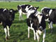

生长期75%
大育成牛期
12月25日
荷兰肉牛
Holland beef cattle
三省农场养殖1区—01畜禽棚区
A
掌上农场
畜禽棚区
品种：荷兰肉牛
生长度75% 健康值：良好
哺乳期
断奶期
小育成牛
大育成牛
0
3个月
6个月
12个月
绿色履历
生长过程
实时视频
菜谱
10月11日
体重51公斤
9月11日
断奶期犊牛

8月21日
哺乳期犊牛
7月21日
哺乳期犊牛，牛初乳喂养
7月11日
11:30出生，体重11公斤
游
摘
溯
吾